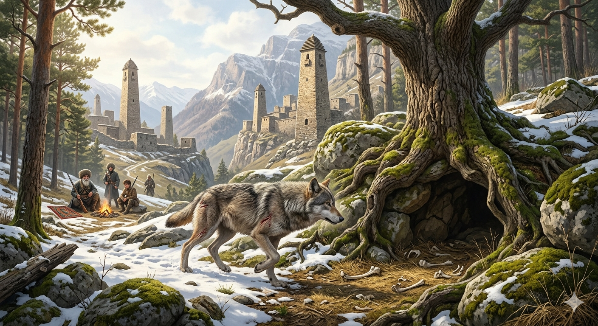

И.А. Дахкильгов. Хьехаме дувцарш - поучительные рассказы-притчи.
И.А. Дахкильгов. Хьехаме дувцарш - поучительные рассказы-притчи. Из ингушского фольклора.
[ Пред. ]
[ Содержание ]

Ший мохк безарах
"Жена мотт латтача бордз гучаяьннай, цо вай жа тедалехьа, из е еза вай", - аьннад цхьан кхонахчо ший новкъосташка. Дуккха вӀашагӀ а кхийтта, топашца кийч а бенна, бордз гучаювлача метте бахаб чарахьий. Йоккха хьу чу а лаьца, из тахка болабенаб уж. ЦӀогӀарч детташ, наг-наггахьа топ кхоссаш, доккха дов эйдааь хиннад чарахьаша. ДӀаи хьайи ада йолаеннай бордз. Из дӀа мел ийккхача метте чарахьий хиннаб. ДӀакхийста, хьакхийста, тӀеххьара берза хайнад цу хьунагӀа ше кхы ютаргъоацалга. Цхьан метте аьттув а баьнна, цу хьунагӀара, чарахьаша тессача цу гон юкъера, ийккха дӀаяхай из. БӀарччача денна хьунагӀа лийна, кхы берза тӀа ца кхаьча чарахьий юхабийрзаб. ТӀаккха салоӀаш багӀаш, цхьан чарахьа аьнна хиннад: - ВанагӀа, ма чӀоагӀа ейна дӀаяьлар из бордз! Е сигала а е лаьтта а йоацаш ейнай. Мича яха хургйол-те из? - Сона хов из мича яхай, - жоп деннад цхьан ха яхача чарахьас, - тахан вай санна ше готийча, бордз дӀайода ший нана-бордз ехкача метте. Гонахьа мел дукха хьунаш, лоамаш, аьлеш дар, аьнна, дӀаяха дукха моттигаш яр, аьнна, шийна хала ди тӀаэттача, бордз ше кӀаьзах йолча хана хьалкхийнача къорга мара соцаргьяц. Иштта боча я берза ше яь моттиг. - Цхьан юкъа уйла еш а ваьгӀа, воккхача саго тӀатехар, - цхьадола адамаш а Ӏомадала мегаргдар берзагара шоай Наьначе еза лархӀа а цун хам бе а.
РУССКИЙ
О любви к своей родине
Некий мужчина сказал своим товарищам: "В том месте, где пасутся наши стада, объявился волк. Надо его уничтожить, пока он не начал резать наших овец". Собрались охотники, вооружились и двинулись к тому лесу, в котором объявился волк. Длинной цепью они стали прочесывать лес. Охотники подняли большой шум, стреляли в воздух, чтобы спугнуть и выявить волка. Он же начал метаться по лесу и куда бы не кинулся, натыкался на охотников. Наконец, волк понял, что ему больше не ужиться в этом лесу. Повезло, и он сумел вырваться из окружения и покинуть лес. Весь день проплутали охотники и, не найдя волка, повернули назад. Вернувшись, они расположились на отдых. Один из охотников сказал: - Удивительное дело, куда мог подеваться этот волк? Исчез, словно его не было ни на земле, ни на небе. - Я знаю, куда он подевался, - ответил ему старый охотник. - Когда волк попадает в такую переделку, какую мы сегодня ему устроили, он прямиком бежит в то логово, где его родила мать-волчица. Даже если у волка и есть возможность убежать в минуту опасности в горы, в дальние леса и лощины, он, тем не менее, убегает туда, где ощетинилась его мать, настолько волк почитает свою волчью родину. - Затем старый охотник призадумался и добавил: "Не мешало бы и некоторым людям научиться у волка любить и ценить свою родину!".
ENGLISH
On love for one's homeland
A man said to his companions: "A wolf has been spotted where our flocks graze. We must kill it before it starts killing our sheep." The hunters gathered, armed themselves and set off for the forest where the wolf had been sighted. They formed a long line and began to comb through the forest. The hunters made a great deal of noise and fired shots into the air to scare the wolf away and flush it out. The wolf began to dart about the forest, but wherever it ran, it kept bumping into the hunters. Finally, the wolf realised it could no longer survive in that forest. By a stroke of luck, it managed to break out of the encirclement and leave the forest. The hunters wandered about all day and, having found no trace of the wolf, turned back. On their return, they settled down to rest. One of the hunters said: 'It's a strange thing—where on earth could that wolf have got to? He's vanished as if he'd never been on earth or in the sky.' 'I know where he's gone,' replied the old hunter. 'When a wolf finds himself in the sort of predicament we put him in today, he runs straight to the den where his mother gave birth to him.' Even if a wolf has the chance to flee to the mountains, distant forests or ravines in a moment of danger, he nevertheless runs to the place where his mother raised him; that is how much a wolf reveres his wolfish homeland. - Then the old hunter fell silent for a moment and added: 'It wouldn't go amiss for some people to learn from the wolf how to love and cherish their homeland!'
НОХЧИЙН
ПОГОВОРКИ
Мелла дуненна го тувсарах, цӀагӀа мара сатец. Сколько ни блуждай по свету, лишь дома душа находит успокоение. No matter how far one wanders the world, the soul finds peace only at home. Мел дуьненна го тийсарах, цӀахь бен сатац.Мехка ираз доацаш сага ираз хила йиш яц. Счастье человека невозможно без счастья родной страны. A person's happiness is impossible without the happiness of their homeland. Мехкан ирс доцуш стеган ирс хила йиш йац.Мехках ваьнна лелачун каша хиннадац. Оторвавшийся от родны скинул без могилы. One who wanders far from their homeland is left without even a grave of their own. Махках ваьлла лелачун каш хилла дац.Мехко ваьккхар ваьннав, мехко воаваьр вайнав. За кем стояла родина, тот выжил; от кого она отреклась – сгинул. One the homeland stood by survived; one the homeland turned away from perished. Махко ваькхнарг ваьлла, махко вохийнарг вайна.Миска бо ираз долашагӀа да мехках хаьда лелача сагал. Жалкий сирота счастливее того, кто родины лишился. A humble orphan is happier still than one who has lost their homeland. Миска бо ирсе ду махках хаьдда лелачу стагал.Нахаца лайна бала – бала бац. Горе, пережитое вместе с народом, - не горе. Grief shared with your people is no grief at all. Нахаца лайна бала - бала дац.Наьха (кхыча) юртарча сагал ший юртара жӀали тол. Собака своего села лучше жителя чужого села. A dog from your own village is better than a man from someone else's. Нехан (кхечу) йуьртара стагал шен йуьртара жӀаьла тоьлу.Оалхазара а беза ший мехка бола бӀы. И птица любит гнездиться у себя на родине. Even a bird loves its own homeland's flock. Олхазарна а беза шен махкахь болу бен.Овла хаьда га йокъаеннай, мехках хаьдача сагах йовсар хиннай. Дерево без корней засыхает, человек без Родины – безродный бродяга. A tree without roots withers; a person without a homeland becomes rootless too. Орам хаьдда дитт дакъаделла, махках хаьдда стагах йовсар хилла.Ткъамаш доацар – оалхазар дац, ший мохк боацар – адам дац. Птица без крыльев – не птица, человек без родины – не человек. A bird without wings is not a bird; a person without a homeland is not a person. ТӀемаш доцург - олхазар дац, шен мохк боцург - адам дац.Хье вахача мехка лакха гӀала йогӀа. Высокую башню воздвигай в своей стране. Build a high tower in your own homeland. Хьо вехачу махкахь лекха гӀала йогӀа.Ши ког гӀортолла мара деце а, ший лаьтта бочагӀа да. Родная земля милее всех, даже если это клочок, на котором едва обеими ногами станешь. One's own land is dearer, even if it's barely enough for two feet to stand on. Ши ког гӀортолла бен дацахь а, шен латта бочах ду.Ший къаманца воацар – миска бо да. Кто не со своим народом – тот горький сирота. One who is not with their own people is a wretched orphan. Шен къомаца воцург - миска бо ду.Ший мехка доацача эро цогал лаьцадац. На чужбине гончая лисицу не поймала. In a foreign land, even a hound could not catch a fox. Шен махкахь доцучу эро цхьогал лаьцна дац.